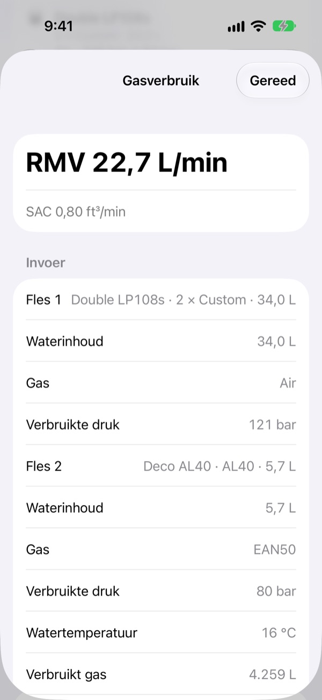
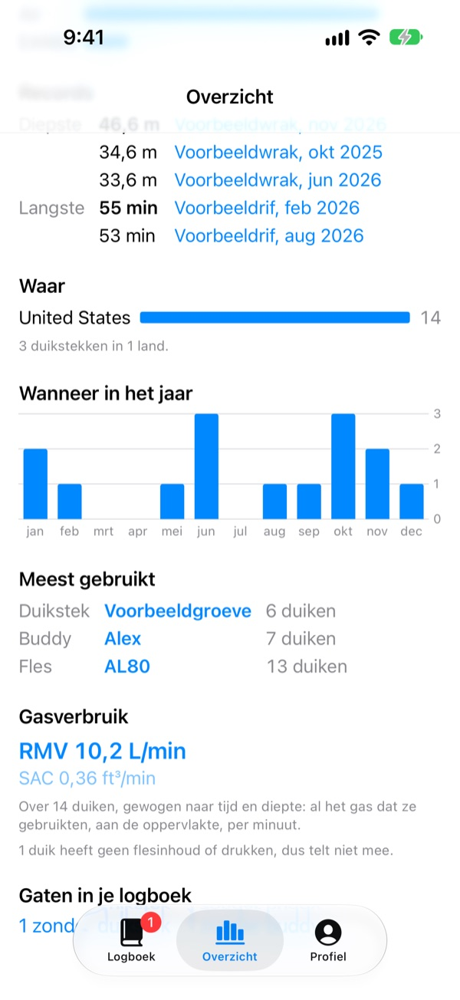

Werk eerst elk apparaat bij
Veel problemen verdwijnen als elk apparaat de nieuwste build draait. Open TestFlight op elke iPhone, iPad en Mac die je gebruikt en installeer eventuele updates. Een oudere build stopt met het versturen van wijzigingen tot hij is bijgewerkt, en meldt Werk Thermocline bij om te blijven synchroniseren. Je wijzigingen blijven bewaard en worden na het bijwerken verstuurd.
Downloads van een duikcomputer
De computer wordt niet gevonden
- Maak de computer wakker en zet hem in zijn Bluetooth-modus (Shearwater: Menu → Bluetooth). Hij blijft daar maar ongeveer twee minuten in.
- Houd hem dicht bij de iPhone, iPad of Mac.
- Shearwater-computers gaan terug naar het laatste apparaat dat ze gebruikten. Is je telefoon of een andere Mac in de buurt, zet dan Bluetooth uit op dat apparaat en probeer het opnieuw.
- Controleer of Bluetooth aan staat en of Thermocline het mag gebruiken (iPhone: Instellingen → Thermocline; Mac: Systeeminstellingen → Privacy en beveiliging → Bluetooth).
Het is een Predator of Petrel 1 en de iPhone ziet hem niet
Deze gebruiken een oudere Bluetooth (Bluetooth Classic) die iPhones, iPads en Macs niet kunnen bereiken. Download ze met Shearwater Cloud op Windows of Android en importeer daarna de export of een UDDF-bestand in Thermocline.
Hij maakt verbinding maar vraagt om een pincode
Typ de code die op het scherm van de computer staat. Dat is alleen de eerste keer nodig.
‘Geen nieuwe duiken’
Alleen duiken die nieuwer zijn dan je laatste download, worden opgehaald. Heb je een duik verwijderd en wil je hem terug, zet dan Download elke duik op de computer aan en download opnieuw. Duiken die al in je logboek staan, worden overgeslagen.
De download stopte halverwege
Kies Bewaar om de duiken die zijn binnengekomen te bewaren, en download dan opnieuw voor de rest. Blijft hij stoppen, kies dan Probeer opnieuw dicht bij de computer, en stuur het downloadlog op.
Een kabeldownload mislukt op de Mac
- Controleer of de poort bij de kabel past: de lijst laat zien wat voor soort poort elke poort is, en waarschuwt als hij niet past bij het model dat je hebt gekozen.
- Trek de kabel eruit en steek hem er weer in, en gebruik dan de vernieuwknop om opnieuw naar kabels te zoeken.
- Volg de stappen onder Voordat je begint voor je model.
- Kabeldownloads zijn nieuw. Stuur het downloadlog hoe dan ook op.
Synchronisatie tussen apparaten
Mijn iPhone-app zegt dat Thermocline nu één app is, of ik zie twee Thermocline-apps
Op 18 november 2026 werden de apps voor iPhone, iPad, Mac en Apple Watch één app, met één bètalink. De iPhone-app die je eerder had, helpt je nu alleen nog met overstappen.
- Open de oude app. Zegt hij dat synchronisatie uit staat, tik dan op Zet ‘Synchroniseer met iCloud’ aan en laat hem een minuut open, of tik op Exporteer mijn logboek als UDDF en bewaar het bestand.
- Tik op Doe mee aan de nieuwe bèta, of open de bètalink op je iPhone, en installeer de nieuwe app. Die staat naast de oude.
- Zet in de nieuwe app Profiel → Synchroniseer met iCloud aan. Je duiken, duikstekken, uitrusting en instellingen komen terug. Heb je in plaats daarvan geëxporteerd, gebruik dan Profiel → Importeer een logboekbestand.
- Misschien moet je je duikcomputer opnieuw koppelen, en de Watch-app opnieuw installeren vanuit de Watch-app op je iPhone.
- Toont de nieuwe app dezelfde duiken, verwijder dan de oude.
Op een Mac verandert er niets: blijf de Mac-app zoals gewoonlijk bijwerken.
Na een synchronisatie ontbreken duiken of staan ze dubbel
- Verander nog niets. Maak op elk apparaat een schermafbeelding van het onderdeel Synchronisatie (iPhone: Profiel → Synchronisatie; Mac: Thermocline → Instellingen → Synchronisatie) en stuur die op.
- Controleer of elk apparaat de nieuwste build heeft.
- Profiel → Je gegevens → Herstelpunten kan je logboek terugzetten naar vóór een import, samenvoeging of verwijdering. Bij herstellen wordt je huidige logboek eerst bewaard, zodat het ongedaan kan worden gemaakt.
Een wijziging op het ene apparaat verschijnt niet op het andere
- Controleer of Synchroniseer met iCloud op beide aan staat, ingelogd met hetzelfde Apple Account.
- Kijk bij Wacht op verzenden op het apparaat waar je de wijziging hebt gemaakt, en open de app op beide met bereik. Het onderdeel Synchronisatie zegt wanneer dit apparaat en je andere overeenkomen.
- Druk op Synchroniseer nu.
‘Niet ingelogd bij iCloud’
Log in bij iCloud in de Instellingen van het apparaat. Tot die tijd blijft je logboek veilig op dat apparaat, en het synchroniseert zodra je bent ingelogd.
‘Je iCloud-opslag is vol’
Je logboek is veilig op het apparaat en synchroniseert zodra er ruimte is. Maak wat iCloud-ruimte vrij, of zet Bespaar iCloud-opslag voor duikfoto's aan zodat foto's niet twee keer worden opgeslagen.
‘Een ander apparaat gebruikt een nieuwere versie’
Werk Thermocline op dit apparaat bij in TestFlight. Je wijzigingen zijn hier veilig en worden na de update verstuurd.
Imports
Sommige duiken of gegevens zijn niet binnengekomen
Het importrapport somt alles op onder Niet geïmporteerd en Controleer dit, met de reden. Elk logboek schrijft UDDF net iets anders, dus ontbrekende waarden zijn normaal en blijven leeg. Ontbreekt iets wat je verwachtte, stuur dan het rapport op en, als het kan, het bestand.
Mijn uitrusting, foto's of duiksoorten uit MacDive ontbreken
De UDDF-export van MacDive laat die weg. Importeer de XML ervan eroverheen voor uitrusting, tags en duiksoorten, en importeer op de Mac de map van MacDive voor foto's. Duiken die al in je logboek staan, worden niet twee keer toegevoegd. Zie Welk MacDive-bestand je moet gebruiken.
NDL, ppO₂ of CNS ontbreekt bij duiken uit MacDive
De duikpagina toont NDL als ‘—’ en Deco als ‘Niet geregistreerd’, of bij ppO₂ staat ‘Berekend uit gas en diepte’. De UDDF-export van MacDive bevat de NDL, ppO₂ en CNS van de computer niet. De map ervan heeft geen profiel voor duiken die MacDive op een iPhone of iPad heeft gedownload, omdat het die versleuteld opslaat.
Importeer ook de XML van MacDive: die vult aan wat ontbreekt zonder duiken opnieuw toe te voegen. Zie Welk MacDive-bestand je moet gebruiken.
Raak ik iets kwijt als ik tussen bestanden of apps wissel?
- Je oorspronkelijke bestanden worden nooit gewijzigd. Bewaar je exports uit MacDive, en houd MacDive zelf tot je een paar duiken hebt vergeleken.
- Een tweede import voegt toe, hij vervangt niet. Duiken die al in je logboek staan, worden herkend en krijgen alleen wat ze missen, dus je kunt de XML na de UDDF importeren, of de map na een van beide.
- Je kunt terug. Een herstelpunt met de naam Vóór een import wordt bewaard vóór elke import van meer dan één duik (Profiel → Je gegevens → Herstelpunten op de iPhone, Instellingen → Herstelpunten op de Mac). Op de Mac draait Maak import ongedaan… in het rapport de import ook terug.
- Thermocline verlaten: de UDDF-export ervan is de volledige. Die bevat de NDL, ppO₂ en CNS van de computer tijdens elke duik, uitrusting, tags, duiksoorten en videolinks. Foto's zitten in geen enkel exportbestand.
Geïmporteerde duiken hebben geen gas
Het bestand vermeldde niet welk gas is gebruikt. Die duiken wachten in Te bevestigen zodat je het kunt instellen.
Ik heb het verkeerde bestand geïmporteerd
Gebruik op de Mac Maak import ongedaan… in het importrapport. Op beide apparaten wordt vóór elke import van meer dan één duik een herstelpunt met de naam Vóór een import bewaard.
Een Garmin-bestand wil niet importeren
- ‘Dat is een zipbestand’: Exporteer origineel in Garmin Connect levert een .zip op. Pak die uit en kies dan het .fit-bestand erin.
- ‘Dit is geen Garmin FIT-bestand’: het bestand komt niet van een Garmin-horloge, of alleen de naam eindigt op .fit. Gebruik het bestand uit de map GARMIN → Activity van het horloge, of Exporteer origineel.
- ‘Garmin-bestanden bevatten geen duik’: hardloopsessies, wandelingen, instellingen en gezondheidsbestanden worden overgeslagen. Alleen duiken komen binnen.
- ‘Lijken afgebroken of beschadigd’: het bestand hield halverwege op, vaak door een kopie of download die niet afkwam. Wat gelezen kon worden, wordt getoond; kopieer het bestand opnieuw van het horloge en importeer het opnieuw om de rest te krijgen. Duiken die al in je logboek staan, worden overgeslagen.
- Een Garmin-bestand samen met een ander logboekbestand kiezen kan niet in één keer: importeer het logboekbestand, en daarna de Garmin-bestanden.
Een Garmin-duik vraagt me de flessen te controleren
Met meer dan één fleszender vermeldt het bestand van Garmin niet op welk gas elke zender zat, dus zijn ze op volgorde aan de flessen van de duik gekoppeld. Open het gasgedeelte van de duik en controleer of elke druk bij de juiste fles staat.
De tijd van een Garmin-duik zit er een uur naast
De tijd komt van de klok van het horloge. Stond die niet op de lokale tijd van waar je dook, dan wordt de duik getoond op de tijd van het horloge. Wijzig de tijd van de duik, of stel vóór de volgende reis de tijdzone van het horloge in.
Een driftduik heeft de verkeerde duikstek
Een duik wordt gekoppeld aan de dichtstbijzijnde van de plek waar je te water ging en de plek waar je bovenkwam, wat bij een driftduik meestal de plek is waar je te water ging. Is hij aan de verkeerde of aan geen duikstek gekoppeld, kies dan de duikstek bij de duik, en zet andere wrakken waar je langs kwam in de notities.
Gasverbruik en SAC
Een SAC-waarde lijkt niet te kloppen
Tik of klik op Hoe? ernaast. Dat toont elke invoer: de fles en de waterinhoud, drukken, temperatuur, de reëel-gascorrectie, tijd en diepte. De gebruikelijke oorzaak is een verkeerde flesinhoud; corrigeer die in Uitrusting. Stuur een schermafbeelding van het scherm Hoe? als het er dan nog niet goed uitziet.

Er is geen SAC, alleen een melding
- Voeg de flesinhoud toe om SAC te zien: kies het model van de fles of voer de inhoud in.
- Voeg begin- en einddruk toe om SAC te zien: er is geen zender, dus voer ze in bij de fles.
- SAC heeft een diepteprofiel nodig: met de hand gelogde duiken zonder profiel hebben geen SAC.
- Rebreatherduiken krijgen geen SAC-waarde.
SAC telt maar één fles mee
Bij een duik met meerdere gassen heeft alleen de fles met de zender drukken. Voer begin- en einddruk in bij de andere fles en SAC omvat al het gas.
Gasverbruik in Overzicht zegt dat geen enkele duik een flesinhoud heeft
Gasverbruik middelt alleen duiken met een flesinhoud en begin- en einddruk. Duiken uit de UDDF van MacDive hebben geen flesinhoud, omdat de inhouden daarin geen waterinhouden zijn; de XML eroverheen importeren vult ze aan (zie Welk MacDive-bestand je moet gebruiken). Stel anders de fles in bij je duiken (kies het model, of een uitrustingsset) en voeg drukken toe waar je die hebt. Onder het getal zegt Gasverbruik hoeveel duiken niet zijn meegeteld.

Foto's
Een foto verschijnt niet op mijn andere apparaat
Met Bespaar iCloud-opslag voor duikfoto's aan houdt een foto zijn kopie tot je andere apparaat hem in iCloud-foto's vindt. Zet de instelling op beide apparaten aan, controleer of iCloud-foto's op beide aan staat, en geef het de tijd om te uploaden.
Video's zijn niet toegevoegd
Video's uit je bibliotheek kunnen alleen worden gekoppeld, niet gekopieerd. Zet Synchronisatie → Bespaar iCloud-opslag voor duikfoto's aan, en zorg dat de video in iCloud-foto's staat. Of plak een YouTube- of Vimeo-link onder de foto's van de duik.
‘Thermocline kan je foto's niet lezen’
Toegang tot Foto's is geweigerd, dus foto's worden gekopieerd in plaats van gekoppeld. Om ze te koppelen, sta je toegang toe in Instellingen → Privacy en beveiliging → Foto's → Thermocline.
Duikstekken en de Apple Watch
De voorgestelde duikstek klopt niet, of er is er geen
Kies een andere duikstek, zoek in de ingebouwde lijsten op naam, of markeer of typ de positie zelf. Groeves en meren in het binnenland ontbreken vaak in openbare lijsten, dus je eigen duikstekken komen vanaf dan eerst in de suggesties.
Thermocline staat niet op mijn Apple Watch
De Watch-app komt mee met de iPhone-app uit TestFlight. Open op je iPhone de Watch-app, zoek Thermocline onder Beschikbare apps en tik op Installeer. Hij heeft watchOS 11 of nieuwer nodig. Ben je overgestapt van de oude iPhone-app, installeer hem dan opnieuw: de oude Watch-app hoort bij de oude iPhone-app.
Het horloge zegt ‘Wachten op een goede fix’ en Markeer plek blijft grijs
Een plek wordt alleen bewaard uit een fix binnen ±30 m die minder dan 30 seconden oud is, zodat een verkeerde positie nooit in je logboek komt. Blijf aan de oppervlakte met het horloge boven water en vrij zicht op de lucht, en geef het een minuut. Een oude positie uit de cache wordt genegeerd betekent dat het op een nieuwe wacht. Gps werkt niet onder water: markeer de plek voordat je afdaalt of als je bovenkomt.
‘Locatietoegang staat uit voor Thermocline’ op het horloge
Open op het horloge Instellingen → Privacy en beveiliging → Locatievoorzieningen, zet Locatievoorzieningen aan en sta Thermocline toe bij gebruik van de app.
Een plek die op de Watch is gemarkeerd, verscheen niet op de iPhone
Open op het horloge Markeringen. Wacht op versturen naar iPhone betekent dat de iPhone hem nog niet heeft: houd het horloge bij je iPhone en open Thermocline op de iPhone. Naar iPhone gestuurd betekent dat hij er is: kijk in Logboek → Te bevestigen. De iPhone zoekt de plek op als hij online is, dus zonder bereik wacht hij met wacht op signaal om op te zoeken.
Het horloge toonde geen naam van een duikstek nadat ik een plek markeerde
De naam komt van je iPhone: als die in de buurt is en Thermocline kan antwoorden, toont het horloge onder de plek de duikstek die hij zou voorstellen, een van jou of een uit de duikstekkenlijsten, met hoe ver die weg is. Is de iPhone buiten bereik, dan noemt het horloge je eigen duikstekken uit de kopie die je iPhone erop heeft achtergelaten, maar niet de duikstekkenlijsten. Is er binnen ongeveer 1,5 km geen duikstek, dan wordt de plek zonder naam gemarkeerd. Hoe dan ook kies je de duikstek op de iPhone, in Logboek → Te bevestigen.
De naam die ik op het horloge insprak, is niet bewaard
De naam wordt bewaard als het dicteren of het toetsenbord sluit, of als je teruggaat. Open Markeringen, tik op de plek en controleer de naam; tik op Wijzig de naam om het opnieuw te proberen. Was de plek al verstuurd, dan volgt de naam hem naar de iPhone.
Registreert het horloge mijn duiken?
Nee. De Watch-app van Thermocline markeert alleen plekken aan de oppervlakte. Je duiken komen van je duikcomputer. Voor Garmin Descent-horloges importeer je hun .fit-bestanden: zie Garmin Descent in de handleiding.
Een plek is van het horloge verdwenen
Dat is de bedoeling. Een plek verdwijnt van het horloge zodra hij op de iPhone is bevestigd of verworpen. Een bevestigde plek is een duikstek in je logboek en wordt naar je andere apparaten gesynchroniseerd.
Een melding of downloadlog sturen
- Vanuit de app: maak een schermafbeelding en gebruik dan Deel bètafeedback in TestFlight. Hij komt aan met de build en het apparaat erbij.
- Downloadlog, iPhone: tik op het downloadscherm op Downloadlog en deel het dan. Het bevat alleen Bluetooth- en computermeldingen, geen duikgegevens.
- Downloadlog, Mac: kies in het downloadvenster Downloadlog…, dan Bewaar log…, en voeg het bestand toe.
- E-mail: brian@616labs.net, met je apparaat, het buildnummer (te zien in TestFlight) en wat je verwachtte dat er zou gebeuren.